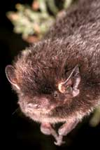

Of the roughly 5,400 mammal species on our planet, about 1,100 arebats. In other words, about one out of five mammal species is abat. Biologists categorize bats by size, into two groups, megabatsand microbats. Megabats live only in the tropics and arecollectively known as flying foxes. These are the world's largestbats, weighing as much as 3.5 pounds and with wingspans of up to 6feet. Microbats occur worldwide and include the planet's smallestmammal, the bumblebee bat ? it weighs about as much as a paper clipand has a wingspan of about 5 inches.
All of the 46 bat species that live in the United States and Canadaare microbats. Most of our bat species are decidedly small, buttheir spread wings make them seem bigger. For example, the bigbrown bat ? common throughout the United States ? has a wingspan ofup to 13 inches, but weighs only half an ounce.
Bats also are among the most varied looking of any animal group onEarth. With the exception of one hairless species, all bats havefur (they're the only creatures that truly make fur fly). Their furranges from stiff and sparse to long and fluffy, from pale blond orbright red to dark black or white. Some have long, swooping ears;others have bulbous or short, stubby ears or just wrinkled folds ofskin; some have cute, little doglike faces; but most have peculiarfacial features straight out of science fiction. Just read some oftheir names and you'll have an idea of the visual variety:long-nosed bat, short-nosed bat, spear-nosed bat, ghost-faced bat,mustache bat, horseshoe bat, hammer-headed bat, bulldog bat,leaf-chinned bat and slit-faced bat.
To read more about these amazing creatures, check out TerryKrautwurst's story, 'Fantastic Bats,' in the October/November 2005issue of Mother Earth News.
|
 |
|
|